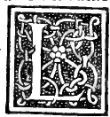

CAPITOLO XLIX¶
Delo exacedron piano solido o ver vacuo absciso soHdo o ver vacuo eleuato piano e eleuato absciso.

Vili. Lo exacedron o voHamo dir cubo piano solido over vacuo ha 12 linee o ver lati o coste e 24 anguli superficiali e 8 solidi e 6 basi o ver superficie quah lo contengano tutte quadrate equilatere e anco equiangule simile ala forma del diabolico instrumento altramente detto dado o ver taxillo.
Lo exacedron scapezzo ouer absciso similmente sohdo o ver vacuo ha 24 linee quali circa epso causano 48 anguli superficiali deli quali 24 sonno recti eli altri acuti. E haue 12 solidi e fia contenuto da 14 superficie o ver basi cioè da 6 quadrate e 8 triangule. E tutte le diete linee sonno commune ale quadrate e ale trigone perche quelle 6 quadrate gionte asiemi angulariter de necessita causano 8 trianguli si commo fecero H exagoni nello tetracedron absciso. E nasci dal cubo taghato vniforme nella mita de ciascun suo lato commo demostra alochio la sua proposta forma materiale.
Lo exacedron eleuato solido o ver vacuo a sua constitutione de necessita concurrano 36 linee le quah fraloro apHcate causano 72 anguH superficiali e 6 solidi pyramidali da 4 superficiali cadauno contenuto. E fia vestito da 24 superficie triangulari quali propriamente non sonno dadir basi. E de quelle linee 12 ne sonno cummune atutti quelU trianguli superficiali che lo contengano e circundano e fia composto dicto corpo de 6 pyramidi laterate quadrilatere extrinseci quali alochio tutte sapresentano secondo la situatione del corpo.
E ancora del cubo intrinseco sopra el quale diete pyramide seposano e solo lintellecto lo ymagina. perche alochio tutto sasconde per la suppositione alui de diete pyramidi e di quel cubo le sue 6 superficie quadrati sonno basi de diete 6 pyramidi che sonno tutte de medesima alteza e sonno ascoste dalochio e circumdano ocultamente dicto cubo.
Lo exacedron absciso eleuato solido ouer vacuo ha linee ouer lati o coste 72. equeste fanno 144. anguli superficiali ede solidi ne fanno 14. tutti pyramidali. De quali 6 sonno de Pyramide laterate quadrangule e 8 de pyramidi trilatere e diete linee 24 ne sonno comune ale pyramidi trigone e tetragone. E ha 48 faze ouer superficie che Io circundano tutte triangulari e questo si facto corpo si compone delo exacedron tagliato solido intrinseco per intellecto solo perceptibile e de 14 pyramidi commo e dicto egettato in piano spacio sempre se fermo sopra 3 coni pyramidali dali o ver ponti commo la forma demonstra.